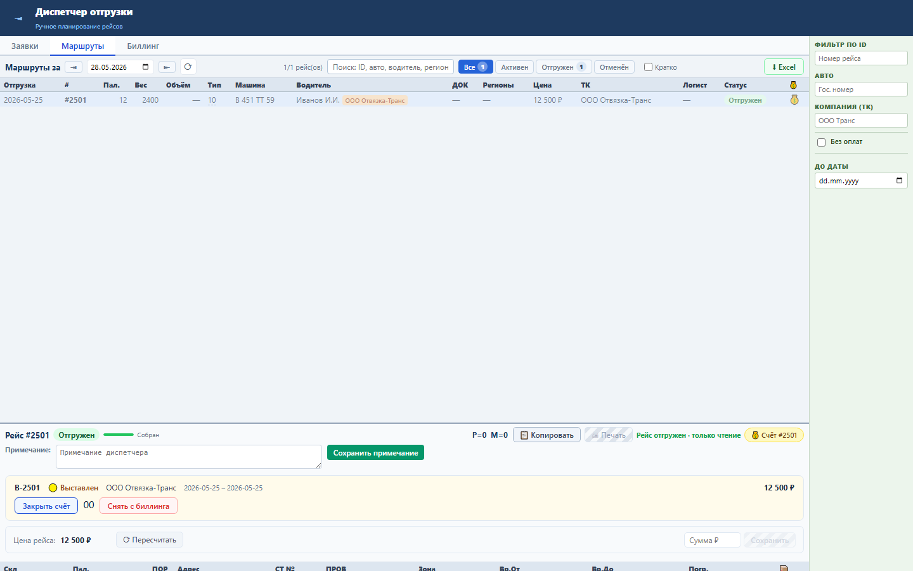
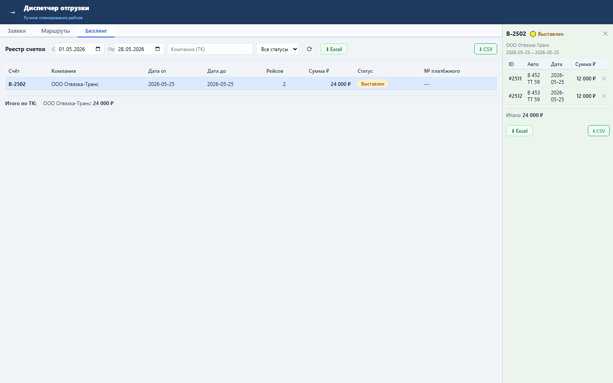

Блок позволяет отвязать ошибочно выставленный рейс от открытого счёта из карточки рейса или из панели деталей счёта.
Операция очищает RRL_TRANSPORT_TASK.PAY_ORDER_ID через DELETE /billing/orders/{order_id}/tasks/{tt_id}.
Рейс снова доступен для корректного выставления; закрытые и оплаченные счета защищены от изменения.


Проверка: functional, UI smoke и load gates пройдены.